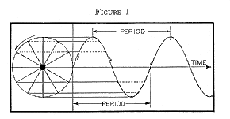
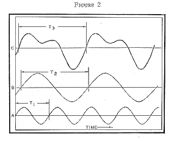
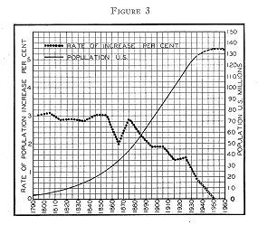
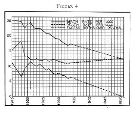
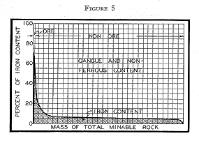
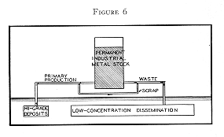
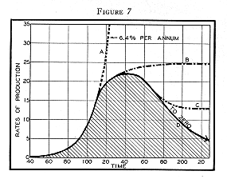
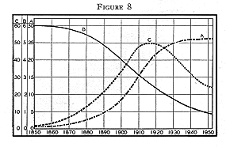

|
|
Search |
Published in:
- Technocracy, Series A, No. 12, June 1938
- Great Lakes Technocrat Sept./Oct. 1948, No. 93. Part 1 of 3 parts (last two parts not published, as this was the last issue published).
The figures in this could use some work, they didn't scan in too well. They should probably be redrawn.
As far back as we have record and doubtless farther, one of the greatest concerns of the human race has been the problem of what is going to happen in the future. So great has been this concern that in most places and times there has existed a separate priestly class whose special function was to make predictions and to give advice, for a consideration, to the officers of state and the leaders of business concerning the probable outcome of any venture that might be embarked upon.
In the days of the Old Testament it was the prophets who assumed this priestly role. In ancient Greece the priests of the famous oracle at Delphi were oftentimes the principal advisors to the rulers of the state. In the Middle Ages the astrologers came into vogue, and no medieval court was properly appointed without its court astrologer, who also in many instances was the professor of astrology in the local university.
Today, notwithstanding the fact that there are still a dozen or so practicing astrologers listed in the New York classified telephone directory, astrology has fallen pretty well into disrepute. Instead of professors of astrology in our modern state-owned and privately endowed universities, we have professors and departments of economics; and in the place of the court astrologer, or the priests at the temple of Delphi, we now have the Brookings Institution.
The devices of official prognosticators also have varied considerably with time. God descended and delivered his message to the biblical prophets. The priests at Delphi uttered oracular noises while being overcome by the noxious fumes emanating from the hot springs underneath the temple. The tools of the astrologer consisted of such matters as the `positions of the planets,' the `horoscope,' and `the signs of the zodiac.' The economist has the `law of supply and demand,' the `niggardliness of nature' and the `insatiability of human desire.' He believes in `sound money,' the restoration of `confidence,' and that one can depend upon the `natural forces of recovery' to restore things to `normal' conditions. And above all it is by means of the `business cycle' that he is enabled to predict with supreme confidence what is going to happen.
It was on the basis of the business cycle that economists were able to tell us in 1930 and 1931 that prosperity was `just around the corner.' In January 1936, when industrial production was on its way up as a result of government spending, the economists, by a review of the business cycle, were able to show that everything was turning out exactly according to Hoyle, for recovery from the depression of 1873 had come 1879, from that of 1893 in 1899, and from that of 1907 in 1912--within five or six years in each instance. Finally, in early 1938, after industry had undergone the most spectacular shutdown in American history due to the curtailment of government spending, it was shown that the business cycle runs on a twenty year period (for example: 1873, 1893, 1907, 1921, and 1929), but that there always has been a mid-term `recession.'
Probably no single subject in all economic literature has been written on more lavishly than the business cycle.' Libraries exist upon this subject alone, ranging in technicality from the most elementary discussions, to treatises bristling with advanced mathematics; yet for the last ten years no instance has been observed of an accurate prediction, by means of this method, of any major event in the future, although its adaptability in explaining events that are already past appears unlimited.
The whole fallacy of all such discussions seems to lie in a failure to comprehend, or perhaps to define the concept of `cycle' and that of `business.'
In the first place one needs to consider just what is the meaning of the word `cycle.' The word originally implied the rotation of a wheel. When a wheel rotates it goes through a series of successive positions and finally returns to exactly its original position. If rotation continues with uniform angular velocity, each of these successive positions of the wheel is repeated at equal intervals of time.
Now if we project the position of a point on the rim of the wheel, viewed in the plane of the wheel, upon a piece of paper moving at uniform velocity parallel to the axis of the wheel, we obtain the wave shaped graph of Figure 1, known as a sine curve. This curve may be taken as the type example of all cyclical phenomena. The horizontal axis represents time and the up and down motion represents some quantity which varies cyclically with time. From this, it is easy to generalize and to define as a cyclical phenomenon any phenomenon which goes through any sequence of events, returns to its initial state, and then repeats indefinitely, the same sequence of events at equal intervals of time.

When the variation with time of any quantity that changes cyclically is plotted as a graph, it can be shown that no matter what the shape of this graph may be, it can always be obtained by the addition of a suitable number of simple sine curves like that of Figure 1 but of different periods (time of a complete cycle) and of different amplitudes (radius of generating circle).
In Figure 2 curve C represents a cycle of period T3 which is obtained by adding the sine curves A and B of periods T1 and T2, respectively.

The most fundamental thing in all cyclical phenomena is the element of repetition at equal intervals of time. Cyclical phenomena repeat themselves identically at equal time intervals. Approximately cyclical phenomena repeat themselves approximately. For example, the temperature in the city of New York rises and falls in an approximately cyclical manner during the course of a year. The pendulum of a clock swings back and forth in a cyclical manner. Astronomical bodies, the sun, the moon, and the planets, move about the heavens in a cyclical manner.
It is this element of repetition in a cyclical phenomenon which makes it easily possible to predict the future. Once a phenomenon is observed to vary cyclically, and the sequence of events for one cycle, and the period, are determined, it is possible to predict what its state will be at any given time in the future. Thus astronomers predict the positions of the sun, the moon, and the planets into the indefinite future. Eclipses are predicted accurately years before they occur. In approximately cyclical phenomena approximate predictions may be made. Thus we may predict freezing weather in Chicago next December, and the next, and for an indefinite number of Decembers thereafter.
Coming now to the other essential part of the `business cycle,' we must investigate what constitutes `business.' If a business cycle is to exist, then that means that some quantity or series of quantities must vary up and down in a cyclical manner as a function of time. `Business' is a sort of blanket or undefined term used to cover loosely a multitude of things. It refers perhaps more specifically to trade and commerce, but trade and commerce are a composite of such industrial activities as agriculture, mining, manufacturing, power production, transportation, and communication; and all are intimately linked up with the magnitude of the human population. Hence to investigate the changes of `business' it becomes necessary to investigate the evolution of a whole industrial complex as a function of time.
Any human social complex consists of a biological complex of plant and animal species of which the human species is only one. Besides this, the human species indulges in an array of activities of an industrial nature of varying degrees of complexity. The history or the evolution of such a social complex may be regarded as the record of the changes of the several component variables of the system as a function of time. Whether or not the system, or any part of it, varies in a cyclical manner, can be determined only by an investigation of the behavior of these component variables with time, or else by the employment of certain basic considerations which enable us to know the nature of possible variations even if the exact details are not known. Our concern in the present discussion is with the past evolution of the social complex of the North American Continent, though the actual discussion and the data employed will apply principally to the United States. This is due to the fact that the data for the United States are most readily accessible. Conclusions and methods of reasoning applicable to the United States are, however, applicable and valid for the remainder of the area also.
One of the most important of the variable quantities in a social complex is population. As remarked before, the human species is only one of a large number of biologic species coexisting in the area, other species, both plant and animal, forming the essential food supply of the human species.
Figure 3 is a graph of the growth of the population of the United States according to the United States census since the year 1790. It is to be noted that in the entire history of the United States the population has never once decreased; it has only increased with time.

From a biological point of view this is not surprising, for it is a well known fact that all biologic species tend to increase, when environmental circumstances will permit it, at a geometrical rate with time. That is to say, if the population doubles in a given number of years, it will again double within the next same number of years, and so on. If we study Figure 3 we will observe that from 1790 to 1860, the population of the United States doubled every 23 years. This is the same type of increase that characterizes a sum of money at compound interest, where the interest is added to the principal continuously as fast as it accrues. Computation shows that from 1790 to 1860 the instantaneous rate of growth was almost exactly 3 percent per annum, compounded continuously.
Now suppose that this were all we knew about the population of the United States--that from 1790 to 1860 it had expanded geometrically or exponentially, at 3 percent per annum, or in such a manner as to double every 23 years. Could we then say anything about the past or the future of that population? Calculation shows that if this rate of increase continued for another 454 years after 1860, or until the year 2314 A. D. there would be one person to every 4 square feet of area in the United States, which would just barely be standing room, and in another 23 years this number would be doubled.
It is obviously physically impossible to support such a population density on any area, so we are forced to conclude that no population of any kind--plant or animal -- can expand geometrically for more than a temporary period of time.
Further study of Figure 3 bears this out. The dotted line curve is the rate of increase of the population in percent per annum for each ten year period. After the Civil War this rate, it will be noted, descends rather sharply toward zero, indicating that although the population is still increasing its rate of growth is decreasing.
Another way of getting at the same thing is by means of the birth-rate and death-rate curves of Figure 4 as derived from the Statistical Abstract of the United States. The solid line curve in this figure represents the number of births per year for each thousand of the population for each year since 1915. The middle curve is the number of deaths, per thousand, and the bottom curve is the excess of births over deaths.

It will be noted that the birth-rate has been falling since 1915, and that the excess of the birth-rate over the death-rate has been declining since 1921, being only 6 per thousand in 1934. The present expectancy of life is about 60 years, so that if the birth-rate and the death-rate were equal and the population stationary, 1/60th of each thousand would be born and 1/60th would die each year, giving a stationary birth-rate and death-rate of 16.7 per thousand. The birth-rate has already reached this critical figure and shows every indication of going below it. If it does, the death-rate must rise as the present older generation dies off. Almost certainly the birth-rate and death-rate curves will meet or cross not later than 1950. 0n this assumption we can estimate the difference between the two from now until then. This enables us to compute the increase of the population for each year between now and 1950. This has been done and the results are plotted on Figure 3 as the dashed extension of the population cure. This indicates a peak population of 134 million persons at about 1950.
It does not seem likely that this figure could be greatly upset by any procedure less drastic than an intensive subsidized program of cannon-fodder production.
If we follow the population curve in the other direction we can see that it is also impossible for it to have expanded at 3 percent per annum for more than a temporary period in the past. In this case let us consider the population of the whole world. The present world population is estimated to be about 2 billion people. The population of 1800 was approximately a third of this amount, 0r about 700 million. From geological and archaeological data it is estimated that the human species has existed as such for about a million years.
While we do not know how many people existed a million years ago, there could not have been fewer than 2 and probably were many more. Neither do we know just how the population increased, but it probably had some rises and falls, reaching about 700 million by the year 1800. Let us suppose, however, that it grew at a uniform geometric rate from an initial population of 2 and reached the figure of 700 million, one million years later. How long would it require to double the population at this rate? This we can solve if we let P0 be the initial population, and P that at any later time, t. Then
P = P0eat (1)
where e is 2.7183, the base of natural logarithms, a is the rate of increase per year, and t the number of years. We first solve equation (1) for a, the rate of increase. Taking logarithms of both sides
log10P = log10P0 + at log10e
and
a = (log10P - log10P0) / t log10e = log10 3.5 x 108 / 106 x 0.4343 = 1.98 x 10-5
Having thus determined a, we can solve for the time required for the population to increase 2-fold. This becomes
P / P0 = 2 = eat (2)
log102 = at log10e
t = log102 / a log10e = .30103 / (1.98 x 10-5 x 0.4343) = 35,000 years
Thus we see that this would require a growth rate such that the population would double in size only once in 35,000 years, which is about 5 times as long as the time since the pyramids were built.
This does not mean that the population actually grew at this rate, which is a sort of mean rate for the period. The population doubtless expanded much faster part of the time (as in the years immediately preceding 1800); if so it also must have expanded more slowly much of the remaining time.
All that has been said of human populations is true also of all other kinds of organic populations. One of the great fallacies of the 19th century was the enunciation of the so-called `Law of Malthus' by the economist Malthus, first formulated in 1798 and revised a number of times after 1800. Malthus stated that human populations tend to increase in geometric ratio with time, but that the food supply increases only arithmetically. The real error consisted in failing to recognize that all biologic species, including those used for human food, tend to increase geometrically with time, but that the usual state of any biologic population, excepting those that fluctuate with the seasons, is stationary. In other words, if we had a record of the various populations of a biologic complex for a period of some thousands of years, any rapid change, either upward or downward, of any population would be a definitely anomalous phenomenon.
Malthus apparently was unaware that he was witnessing one of the most abnormal population changes in the whole history of the earth, and he made the mistake of assuming that what he saw was the normal state of affairs.
This might be of no importance were it not for the fact that even today, most of our contemporary thinking is based unknowingly upon the same hidden errors of Malthus. Not only has the past century been a period of unprecedented population growth, but it has been even more spectacular in its industrial expansion.
Ever since before the dawn of written history the human species has been accumulating technical knowledge of how to convert a larger and lager share of available energy to its own uses. The use of fire, the domestication of animals, the development of tools, the development of agriculture, the mining of metals, the utilization of wind and water power, and the tapping of the vast stores of the fossil fuels, coal and oil, have been among the leading successive steps in this long line of cumulative achievement. Step by step, each of these advances has disturbed the existing biological equilibrium in favor of an increase of the human population. This procession has reached its most spectacular stage of development in the period since the Civil War. During this period, not only have populations increased, but so have a large number of other things--railroads, factories, automobiles, aeroplanes, radios, and the production of such minerals as iron, copper, tin, lead, zinc, aluminum, magnesium, phosphates, potash, coal, and oil.
So monotonously have these things increased during our life times that many of us have assumed naively, like Malthus, that such increase is the `normal' state of affairs, little realizing that some of the most abnormal events in all geological history were being witnessed.
From the Civil War to the World War, for example, the production of coal doubled every 12 years, increasing at a rate of 5.9 percent per annum. From 1880 to 1929 the production of oil and gas increased 8.5 percent per annum, doubling every 8 years. From the Civil War to the World War the production of all energy--coal, oil, gas, and water power--increased at the rate of 6.1 percent per annum, doubling every 11.5 years; the production of pig iron increased at a rate of 7.4 percent per annum, doubling every 9.5 years.
Just as we did in the case of population, let us now see to what extent this state of affairs can be maintained. In the case of coal, the production of which doubled every 12 years, we can calculate what the annual production would be at any given time in the future and also the cumulative production, assuring this rate of growth to be maintained. It is estimated that there are between 3 x 1012 and 4 x 1012 tons of coal still unmined in the United States. Taking a conservative figure of 3.4 X 1012 tons, and allowing production to continue to increase from the year 1900 at 5.9 percent per year, it would require only 111 years, or to the year 2011 A.D., to exhaust the coal reserves of the United States. On the other hand, at the present rate of production of about 600 million tons per year, the supply would last some 4,000 to 6,000 years.
The same sort of relation is true of oil, the production of which increased at the rate of 8.5 percent per annum and reached over a billion barrels per year in 1929. Since that time it has leveled off, averaging approximately a billion barrels per year. In this instance the proven reserves, that is the oil already discovered, amounts only to about 11 or 12 billions of barrels, or a 10 or 12 year supply at the present rate of production. The only way in which this margin can be maintained is by discovery of new oil at a rate equal to the production. While we do not know exactly how much oil remains undiscovered, we do know that it is a limited supply and that for every barrel of oil taken out of the ground there remains one less barrel to be produced, and that every new pool discovered diminishes the undiscovered pools by one. Furthermore, the easy discoveries have already been made and only the difficult ones remain. While it is improbable that all the oil will ever be taken out of the ground or even discovered, it is certain that the production of oil will reach one or more peaks and finally decline, reaching ultimately the limit of zero production. The time of the beginning of this decline in the United States is somewhat uncertain, yet it seems doubtful that it can be postponed any later than 1950 and possibly not that long.
Coal and oil are primarily energy resources and the matter contained is of only secondary importance. In contrast with energy resources, most mineral resources are useful for their material content. They differ also in that the matter contained cannot be destroyed nor removed from the surface of the earth. Spectroscopic analysis shows that almost any specimen of ordinary rock contains traces of most of the known chemical elements. The average iron content of rocks of all kinds is about 5 percent. In the development of material resources, advantage is taken of the fact that there exist localities where by one or another geological process certain mineral substances have become concentrated in abnormally large amounts.
Taking iron as an example, rich concentrations of the mineral hematite (Fe2O3) occur in the Lake Superior, and Birmingham, Alabama iron mining districts. In the Lake Superior district the rock mined contains 50 percent by weight of iron; the iron content of the Alabama ores is 30 percent. The reason for the difference is that the nonferrous content, or gangue, in the Lake Superior district is silica, while in Alabama it is limestone which is useful in smelting.
The distribution of iron concentration in the total mass of minable rock is shown diagrammatically in Figure 5. The total area of the rectangle represents the total min able rock. The vertical columns from left to right represent rock amounts arranged in order of decreasing iron content from the highest of about 70 percent at the extreme left to approximately zero at the right. The narrow black strip at the left, which is shown greatly exaggerated, represents the high concentrations of iron that are currently regarded as minable ore. When such areas are exhausted, which promises to be only a matter of decades, the lower concentration deposits will have to be worked at a correspondingly higher energy cost of extraction.

In the use of any material resource a certain fraction is always inevitably lost. In the case of iron this is largely through corrosion by oxidation, or through needless scattering as in the case of tin cans which go on the garbage dump. A large fraction of lead and zinc are used as paint pigments. All such losses result in a low concentration dissemination of the resource. This means that our industrial operations tend to level off the shaded areas shown in Figure 5. We mine only the highest peaks of the shaded area and ultimately we scatter the material so obtained over the region of low concentration. This causes the surface of the shaded area to tend, like water, to a level characterized by the most probable possible state of uniform concentration.
While Figure 5 is drawn specifically for iron, it may be taken as representative of all material resources, which through industrial use are transformed from a more available and less probable configuration to a more probable and practically non-available configuration.
This is indicated in a somewhat different manner in Figure 6 where the essential elements of the flow-line of any metal are depicted. The stock of metal in industrial usage may be thought of as stored in a storage tank of variable capacity. Metals flow from high-grade deposits by the process of primary production into the store-tank of industrial usage. They leave this tank by wastage or scrap. The scrap may be retrieved and returned along with primary metals to further industrial usage. The waste goes to low-concentration dissemination. The annual gain of the stock of any metal is the difference between the annual production and the annual waste.

The different types of growth phenomena that we have been considering are illustrated in Figure 7. A large number of quantities, we have seen, have increased geometrically or exponentially with time, over a number of decades. They have increased according to the law:
P = P0eat
where P0, is the initial value of the quantity at time t0, P the magnitude of the quantity t years later, a the rate of increase per annum, and e the base of natural logarithms. We have already seen in the cases of population growth and coal production that such a rate of growth is impossible for more than a temporary period, otherwise the population and the coal produced soon would exceed all physically possible limits. This qualification is general. No physical quantity can increase exponentially for more than a limited period of time on an earth that is finite and limited in size. All such growth curves must consequently break away from the exponential curve and level off.

In Figure 7, curve A is an exponential curve expanding at a rate 6.4 percent per annum, or doubling every 11 years, which is intermediate between the rate of growth of the consumption of energy and that of the production of pig-iron in the United States from the Civil War till the World War. Physical production, however, has not been able to keep up the dizzy pace set by curve A, and it has veered off along the solid line curve.
In the future, all such quantities must ultimately follow along curves of the types given by B, C, or D. Fortunately we do not have to wait in order to know which of these three classes any given quantity will have to follow. B represents all quantities which level off approaching asymptotically to a maximum; C represents quantities which level off to some arbitrary level, in general neither a maximum nor zero; D represents quantities which pass through one or more maxima and finally approach zero as a limit.
The development of installed water power in any given area follows a curve of the type B. We may develop more and more of the potential water power but we can never exceed the amount that there is.
All biologic populations and biologic products, such as grain, cotton, lumber, meats, leather, wool, etc., follow curves of the type C. A biologic population rarely becomes zero (extinct); neither can it increase beyond certain limits. The normal state of populations, other than those that fluctuate with the seasons, is stationary. Periods of rapid change are, as we have seen, definitely exceptional.
Finally, to type D belongs the production of all mineral resources. The fossil fuels, coal and oil, are strictly of this type. The curve D represents the amount (tons of coal, barrels of oil, etc.) produced per year. The area under the curve up to any given time represents the integral or cumulative production from the beginning to that date. Since the amount of coal and oil is finite, and the rate of creation of new coal and oil sensibly zero, it follows that no matter what the exact shape of the curve D may be, it must begin at zero and end at zero, and the total area under it may approach but cannot exceed the quantity of the resource originally in existence.
The material resources are also of this sort with this exception: that it is impossible ever to exhaust a material resource, so that if production be kept up long enough, the high-grade deposits will all be obliterated and only the lean ones remain. When this has gone far enough, production may cease, or else it is possible, if energy supplies are available, to continue working the low-grade deposits indefinitely.
So far we have spoken only of quantities that for the last 100 years have been increasing somewhat spectacularly with time. There are other types of quantities which have been decreasing throughout that time, due to progressive changes in the technological processes of production. Among such declining quantities are the amount of coal required to produce a kilowatt-hour of mechanical or electrical energy, the amount of land required to yield a unit of agricultural produce per year, the amount of coal per 1000 gross ton-miles of railroad transportation, and the number of man-hours of human labor required per unit of output of any industrial product.
In general we may say that every time we design new equipment to perform a function formerly done by equipment and processes of an older design, the new equipment has these essential properties: its parts move with a higher frequency, and it requires fewer man-hours of attention per unit of output than the equipment displaced. These are, in fact, the reasons for installing the new equipment.
It is a perfectly general rule, also, that every time equipment is made to run faster, its mass and the floor space it occupies per unit rate of output decrease. For example, the power plants are installing 3600 r.p.m. turbo-generators instead of the usual ones turning at 1800 r.p.m. because the faster ones occupy less space for the same kilowatt rating. The streamlined trains weigh less than half as much per passenger-mile per hour as the old fashioned pullmans, and require less than half as many man-hours per passenger-mile.
All of these curves which decline with time are, as we have seen, rate curves of one kind or another, and the decline occurs in consequence of technological improvement. Associated with each of these decline curves, therefore, is some growth curve of the type we have been discussing. Thus, if Q is some quantity that is being produced and P its rate of production, then
P = dQ / dt (3)
where dQ is the amount of the quantity produced in the time dt.
Now if A is some other quantity such as man-hours or pounds of coal that depends upon Q, then dA/dQ is the amount of A required per unit of Q produced. Finally, the amount of A per unit of time, dA/dt is given by
dA/dt = (dQ / dt) x (dA/dQ) = P x (dA/dQ) (4)
This is illustrated graphically in Figure 8 where curve A represents the rate of production P of some quantity; curve P represents dA/dQ, the amount of some other quantity required to produce a single unit of the quantity represented in curve A; curve C is the product obtained by multiplying the quantities of curves A and B together, year by year, giving the variations with time of the quantity dA/dt of equation (4).

In an early stage when the rate-of-production curve A is near zero, the product curve C is also near zero. As the production increases, the product also increases but not so rapidly, since one member of the product curve C is declining. Finally, as the ordinates of the curve B get smaller and the curve A levels off, the product reaches a maximum and declines.
These relations have been stated abstractly in this manner so as to make them applicable to a number of things that vary in this way. If the curve A represents production and curve B the man-hours required per unit produced, then curve C represents the total man-hours per year in that industry. Curve A may represent the annual-production of kilowatt-hours of electrical energy, and curve B the pounds of coal per kilowatt-hour. Then curve C would be the total coal consumed in the production of electric power. Curve A might be the number of bales of cotton produced in each year and curve B the average number of acres required to produce one bale. The curve C would then represent the total number of acres each year required for the entire crop. Again curve A may represent the annual production of a manufacture industry and curve B the area of floor space or mass of equipment required each year for that rate of production.
There are many other examples of this sort, but in all cases the production represented by curve A must, for reasons already discussed, level off. The quantity of coal, of man-hours, of land area, of floor space, or of metal in machinery, as the case may be, per unit produced or per unit rate of production in consequence of technological improvement must decline. Consequently the total man-hours per year, coal per year, land area, floor space, and metal tied up in machinery will in each instance reach a peak and thereafter decline, as indicated by curve C.
If we now sum up what we have been over, some results of profound significance should become apparent. The history of the United States is the record of the variation with time of a large number of separate biological and industrial quantities. Many of these qualities have increased exponentially until about the World War, and have since then levelled off. No physical quantity can continue to expand exponentially with time for more than a temporary period. In the United States and the North American Continent the period of exponential expansion with present energy resources has already passed.
The last hundred years have been characterized by the most spectacular technological improvements in history. These have led to a continuous decline of such quantities as man-hours per unit produced, pounds of coal per kilowatt-hour, acres per bale of cotton per year, pounds of metal per unit rate of industrial output, area of factory and office floor space per unit rate of manufacture and accounting. Furthermore, there is no indication or likelihood of there being a cessation of these technological trends, in the calculable future.
The combination of these two factors, the leveling off of population and production curves, and the decline of the factors enumerated, leads necessarily to a maximum and then a decline of total man-hours of employment per year, land in cultivation, floor space for both factory and office, and the metals in active industrial use. Furthermore, most of these maxima have already occurred and the decline in the factors enumerated is already under way and has been in some instances (employment for example) for nearly 20 years.
This means decreasing labor for human beings, a contraction of floor space and cultivated farm land, a saving in the rate of exhaustion of non-replaceable resources such as coal and oil, and a curtailment of primary production of the common metals such as iron and copper since the scrap of old equipment becomes more nearly ample to build the new without a drain on ore reserves by primary production.
Notwithstanding some millions of dollars worth of propaganda to the contrary indulged in by the leaders of business in the form of paid advertising and by the presidents of some of our leading technological institutions of learning, these trends are in no wise to be reversed by any scientific or technological procedure, or by any hypothetical `new industry'. The growth curves we have discussed represent an integration of essentially all industries old and new--the wagon industry, the automobile industry, and the aeroplane industry.
The very period during which technological progress has been the fastest--that since the World War is the period of the lowest rate of industrial expansion in the last 100 years of American history.
Returning to our friends, the economists, and their `business cycles', it may be noted that at no time in American history has the ensemble of events that go to make up what is commonly regarded as `business' ever repeated itself cyclically or otherwise. To repeat the events of 1920 it would be necessary to put the population back to its 1920 state; to go back to the 1920 models of automobiles, highways, and other equipment; and to restore to the ground all the coal, oil, and metals that have been removed since that date.
Since any of these things are manifestly impossible, then let us recognize that we are dealing with phenomena that do not and cannot repeat themselves, and that the events of 1873, of 1893, and of 1907 were essentially and fundamentally different from the events of 1938. And the events of 1940 will in no wise be determined upon the basis of what happened in 1875.
The people of the North American Continent cannot travel the road travelled by the peoples of Europe, nor can they travel the road which they have covered in the past. Neither the astrologers, the economists, the politicians, the liberals, the reformers, nor the radicals can conjure out of their crystal balls the blue print of a New America. Only in the trends of modern technology and in the biologic processes taking place on this Continent can the most probable future be read.
Technocracy is the science of social technology; as such, it has determined the next most probable state of human affairs on the North American Continent.